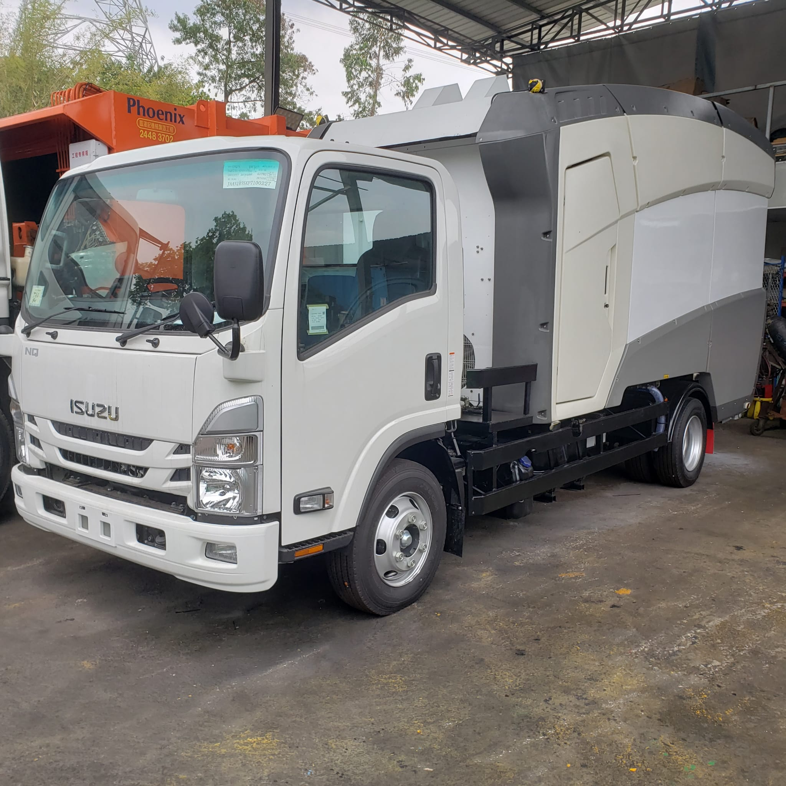
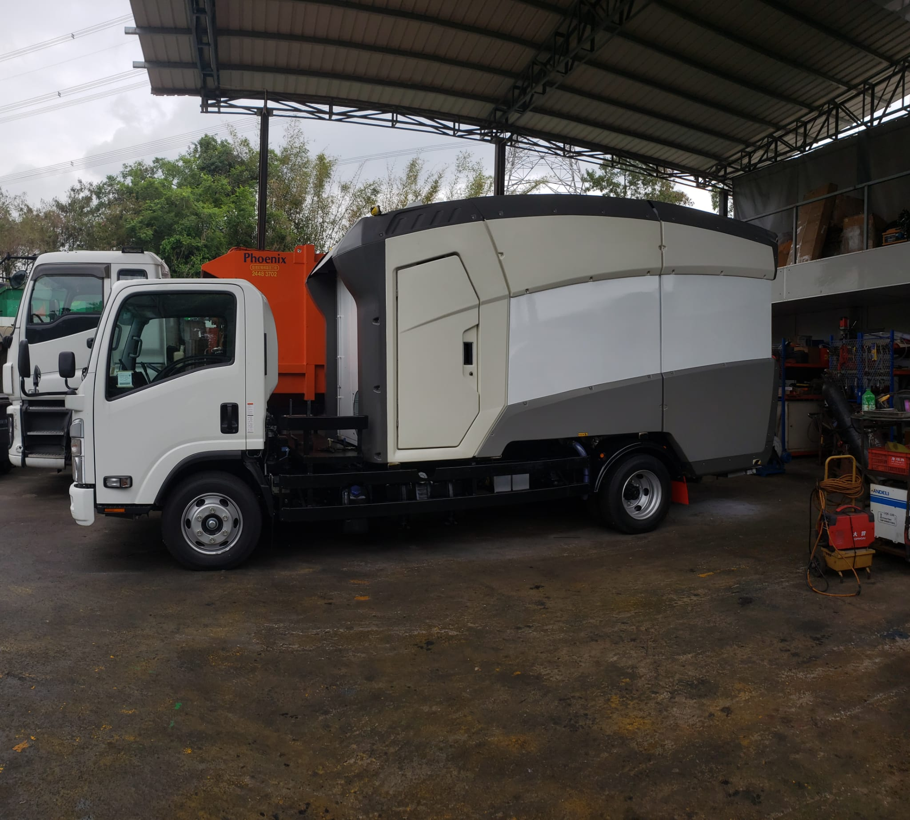
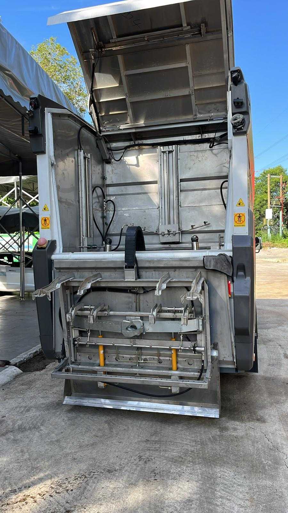
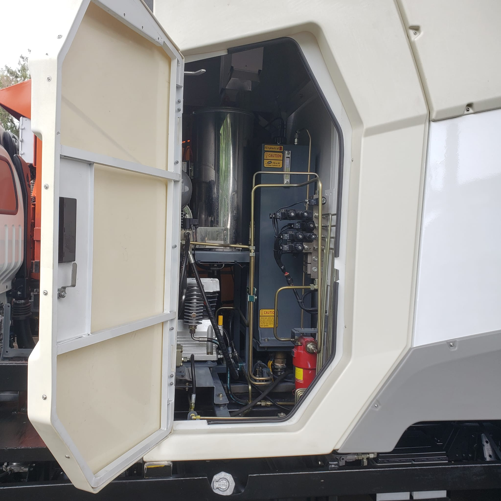

垃圾桶清洗車
高效的垃圾桶清洗解決方案
垃圾桶清洗車可以對 120L、240L、660L、1100L 規格的垃圾桶進行清洗，集洗桶功能與路面養護功能於一體，填補了國內微型洗桶車的空白。
| 項目 | 參數 |
|---|---|
| 整車型號 | CHD5073TQXQLE6 |
| 底盤型號 | QL1070BUHACY |
| 燃料類型 | 柴油 (國六) |
| 底盤軸距 | 3360 mm |
| 發動機型號 | 五十鈴 Isuzu 4KH1CN6LB |
| 發動機功率 | 88 kW |
| 發動機排量 | 2999 ml |
| 整車長 | 6470 mm |
| 整車寬 | 2130 mm |
| 整車高 | 3195 mm |
| 上裝品質 | 3020 kg |
| 整備品質 | 5170 kg |
| 額定載品質 | 2000 kg |
| 最大總品質 | 7300 kg |
| 有效容積（清水箱/污水箱） | 3.2/2.8 m³ |
| 清洗垃圾桶規格 | 120L、240L、660L、1100L |
產品亮點
清洗艙內設有義大利進口高壓旋轉噴頭，360°旋轉高壓清洗垃圾桶內部，保證垃圾桶內部全面清洗，垃圾桶外部則由旋轉噴杆進行高壓清洗。
清洗能力
洗桶數量（裝滿水）：120L~240L垃圾桶可洗120只，660L/1100L垃圾桶可洗60只。
加熱桶出水溫度：60-80℃。
單次洗桶數量：1-2只（120L~240L），1只（660L/1100L）。
一次工作迴圈時間：≥1分鐘（根據實際情況可調整）。
適用場景
適用於城市垃圾桶的清洗和保養。
公共場所：公園、廣場等地的垃圾桶清洗。
工業區域：工廠、倉庫及工業園區的垃圾桶清洗。



